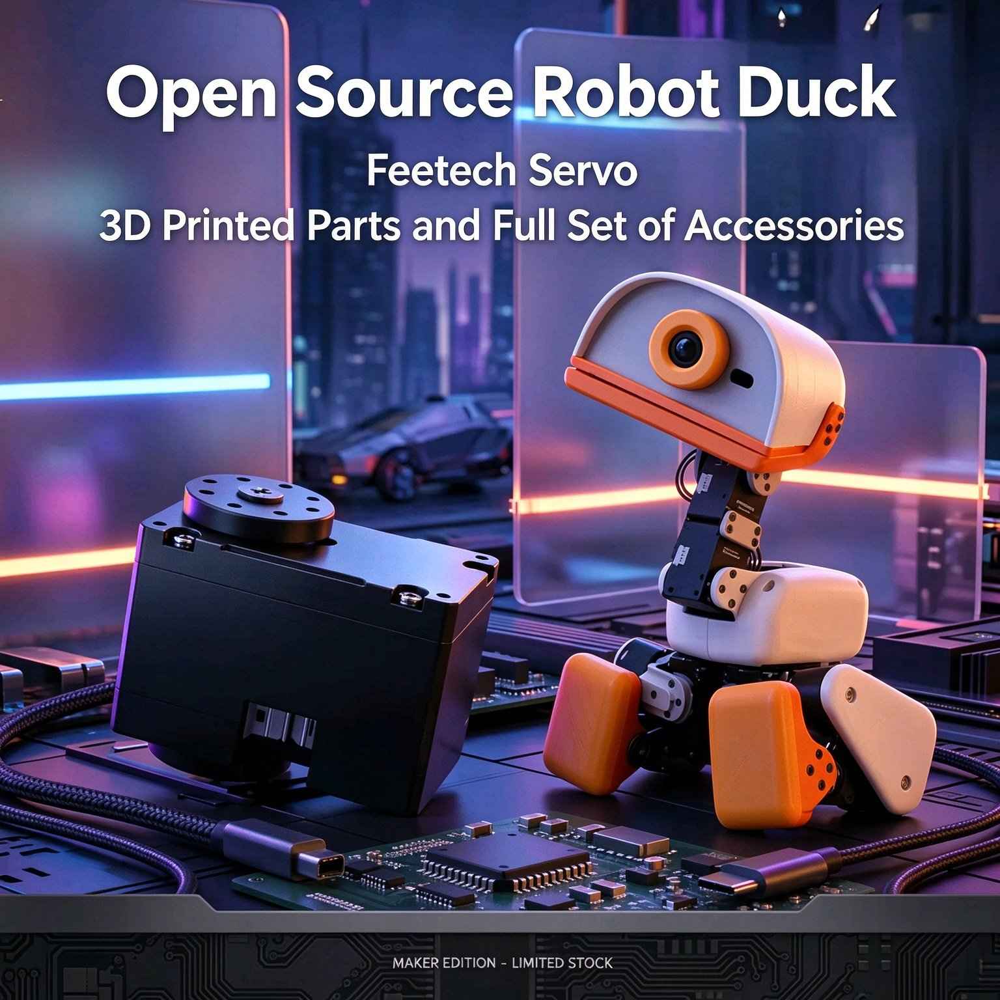

Open-Source Resources
SDK, 3D print files and example projects are available on the WWNT Robotics GitHub organization.
github.com/UnitClaw
15 × HD1910 TTL Bus Servos | 3D-Printed Body | IMX219 Camera | IMU | Fully Open Source
MicroDuck is an open-source robot duck delivered as a fully assembled kit — 15 × HD1910 metal-gear TTL bus servos plus the complete set of 3D-printed parts, electronics and accessories, ready to run out of the box. The dual-axis servo linkage and multi-hole mounting plate drive the neck, body and legs for expressive, responsive motion, while the TTL serial bus daisy-chain wiring keeps the whole build compact and easy to extend. An IMX219 160° wide-angle camera module, an LSM6DSV16X IMU and onboard storage make it a complete platform for robotics courses, embedded system teaching, maker projects and open-source ecosystem development.
SDK, 3D print files and example projects are available on the WWNT Robotics GitHub organization.
github.com/UnitClawSpare servos, camera and IMU modules, 3D-printed shell parts, the servo control board and power accessories.
MicroDuck Accessories